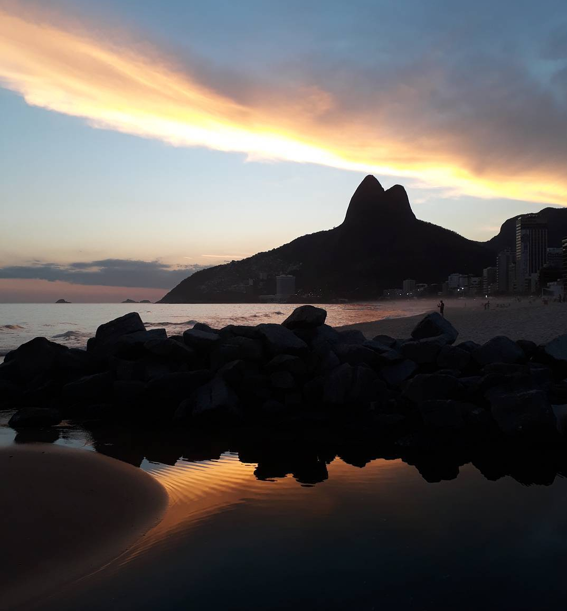
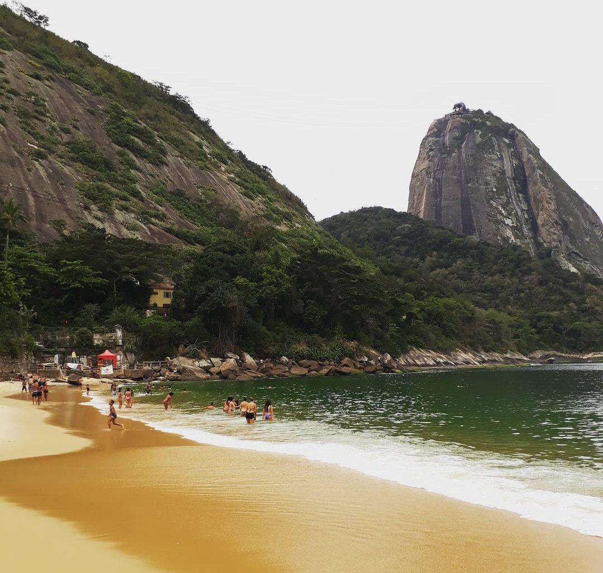
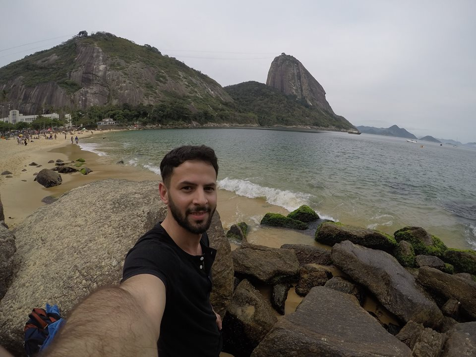

Este es el texto inicial de una serie de capítulos sobre Brasil que entrelazan las vivencias que tuve en mis días en Río de Janeiro, Ilha Grande, Parati, São Sebastião e Ilhabela. No solo van a poder obtener información y detalles de los lugares sino que estos capítulos van a contener un hilo narrativo. ¡Espero que lo disfruten!
Praia de Ipanema, Río de Janeiro.
Separado recientemente, agobiado por el barullo de Buenos Aires y cansado de mi trabajo y de las personas que me rodeaban, sentí la necesidad de que algo cambie. Cuando hablo de necesidad me refiero a todo lo que la palabra significa, yo no quería que algo cambie, lo precisaba. Así fue que un martes y casi sin pensarlo, entre a Google desde el trabajo, busqué un vuelo a Río de Janeiro y un mes después me encontraba haciendo la fila para despachar valijas en Ezeiza. ¡Así es! Mi primer viaje solo se estaba haciendo realidad.
Subí al avión, aún anonadado, y sin hablar me dije: ¡Guau, al fin te animaste! Estaba solo, solo contra el mundo, solo conmigo, solo pero ilusionado con un montón de aventuras que me imaginaba viviendo. Ahí fue cuando empezó mi cataratas de auto-preguntas sobre el futuro que jamás tienen respuesta en el presente ¿Cómo van a ser las personas de los hostels? ¿Voy a poder hacer nuevos amigos? ¿Me voy a sentir cómodo? ¿Me voy a angustiar? Por suerte, la dulce voz de la azafata brasileña preguntando en un tímido español "¿Quiere algo para beber?" Me hizo volver a la realidad.
El plan era 3 días en Río de Janeiro, 4 en Ilha Grande y 2 en Parati. Cada sitio me atraía por una característica diferente, Río por ser reconocido como el centro de la alegría brasileña, Ilha grande por ser un punto de encuentro entre jóvenes de todo el mundo y por contar con unas playas exóticas imperdibles y Parati era la promesa de una ciudad colonial romántica especializada en gastronomía. Pero Gonzalo ¿Para qué queres ir a una ciudad romántica recién separado? Si, soy un poco masoquista.
Praia de Ipanema, Río de Janeiro.
Después de un viaje maratónico, tuve que hacer escala en Paraguay y después en San Pablo, llegue al Aeropuerto Internacional Galeão. Con tan solo bajar del avión todos los recuerdos del viaje a Buzios y a Arraial do Cabo en 2015 se me vinieron a la cabeza, aquella vez, habíamos tomado un transfer con Mechi (si, mi ex) ida y vuelta desde el aeropuerto a Buzios y no había podido conocer Río. Pero ahora la realidad era otra e iba a aprovechar mi posibilidad de conocer la gran ciudad carioca, el núcleo de la zamba y la alegría brasileña.
Es muy fácil llegar desde el aeropuerto a las principales playas como Ipanema o Copacabana. En la puerta del mismo paran varios buses que por unos 15 reales (90 pesos argentinos o 5 dólares aproximadamente) nos dejan en estas playas y nos ofrecen un recorrido por todo Río de Janeiro. Es un servicio económico y útil para conocer la ciudad.
Llegue al Ipanema Beach Hostel una tarde nublada con amagues de lluvia, cansadísimo, hice el check in y me dirigí a descansar a la habitación. No había nadie. Después de una media horita el tiempo empezó a recomponer y decidí ir a pasear un poco. Fue así que andando solo por las "ruas" (calles en portugues) cariocas y conectado a mi mundo y a mi música me empecé a enamorar de Río de Janeiro. Mi extasis fue total cuando después de ver un reñido partido de fútbol playa en Ipanema, el cielo se despejo totalmente y Brasil me regalo el atardecer más hermoso que vi en mi vida (sí, es el que esta en la foto de arriba).
Volví al hostel aproximadamente a las 20hs y tomé un baño. Salí pensando que todavía estaba solo y fue ahí cuando conocí a un particular compañero de cuarto portugués que me contó entre papayas y cigarrilos que estaba triste porque había viajado a ver a una chica brasileña que había conocido por internet y ella desistió a último momento. El desamor hecho historia en una habitación de hostel a unos cuantos kilometros de casa, Río de Janeiro había comenzado muy bien.
Todo mejoraría aún más cuando a las 21hs bajé a la recepción por mi caipirinha gratis (regalaban caipis de 21:00hs a 21:30hs) y el hostel, que hace momentos estaba vacío, se encontraba totalmente lleno. Había una fiesta externa organizada por un grupo de chicas brasileñas fanáticas del funk. ¿Qué es el funk brasileño? Una música para bailar un poco extraña, que con el correr de los días aprendí a querer, creo que por que no tenía otra opción jaja Esa noche tenía pensado ir a bailar, pero la fiesta estuvo tan buena que nos quedamos bebiendo ahí, y cuando todos se fueron la noche se alargó charlando con el personal del hostel que sinceramente, fueron de lo mejor que conocí en Río, argentinos, chilenos, colombianos, todos juntos contando experiencias de vidas y viajes. ¡Una pasada!
Praia Vermelha, Río de Janeiro.
Al otro día me desperté temprano y literalmente hice algo que nunca había hecho: Salí a perderme por las calles de Río de Janeiro. Hay una canción del gran René de Calle 13 que dice "Si quieres cambio verdadero, pués camina distinto". Nunca mejor aplicada, anduve por varios barrios de Río hasta que preguntando (con mucha vergüenza debido a que el portugués carioca es bastante cerrado) llegué a Leblon, una de las zonas más caras ubicada al lado de Ipanema, ahí me tome el subte y después subí a un bus hasta la entrada del famoso Pan de Azúcar.
¡Ey, estás en la entrada de uno de los puntos más turísticos de Río de Janeiro! ¿No vas a subir? No, mi intención era conocer la hermosísima Praia Vermelha, que se encuentra a pies del Pan de Azúcar y de la cual había leído críticas buenísimas. Estaba decidido a no hacer ninguna actividad demasiado turística, así que tampoco subí al Cristo Redentor. ¿Estás loco? No, por primera vez y solo, decidí empezar a vivir vacaciones desde otra perspectiva, desde conectarme con lo natural, con la cultura local y huir a las grandes masas de turistas. En este contexto es que me reposé tranquilamente en mi toallon, observé el calmo mar verde esmeralda y disfrute de un rico "queijoa quente".
En los dos días siguientes, seguí paseando, y conocí el Leblon Mall, un shopping muy moderno que cuenta con un patio de comidas que ofrece una de las mejores vistas de todo Río de Janeiro. Me perdí por todo Río, conocí el estadio de Fluminense, anduve una mañana por las calles de Flamengo y sin dudas lo mejor que hice, fue entrar a uno de los bares que se encuentran cercanos a los arcos de Lapa. Lo que sucedió allí fue mágico, fue Brasil en estado puro. Llegue temprano y me dispusé a pedir unas "batatas" para cenar con unas cervezas frías y el local estaba con un ambiente tranquilo pero lleno de personas. De repente, una banda salió a tocar al centro del restaurante ¡Comenzó la zamba! A partir de ahí todo cambio, absolutamente todos se levantaron de sus mesas y se pusieron a "danzar", niños, niñas, jóvenes y hasta una anciana de unos 80 años emoviendo su cuerpo. Lo único que pude hacer, fue abrir bien los ojos y disfrutar de este espectáculo que solo Brasil te puede regalar.
Pero esto solo acababa de empezar, ya tenía todo preparado para irme a Ilha Grande y en mi cabeza otra vez las auto-preguntas sobre el futuro, pero esta vez, con un presentimiento extraño: "algo especial va a suceder".
Praia Vermelha, Río de Janeiro.